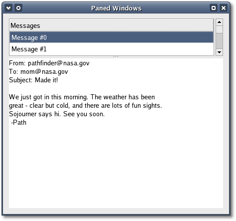

| Xfce
Foundation Classes |
|||
| « Main Page | Index | |||
Paned WindowsThe paned window widgets are
useful when you
want
to divide an area into two parts, with the relative size of the two
parts controlled by the user. A groove is drawn between the two
portions
with a handle that the user can drag to change the ratio. The division
can either be horizontal (HPaned) or vertical (VPaned).
HPaned();void
add1(Gtk::Widget& child);void pack1(Widget& child, bool resize
= false, bool shrink = true);The pack1() method adds a child to the top or left pane and pack2() adds a child to the bottom or right pane. If 'resize' is true the child expands when the paned widget is resized. If 'shrink' is true the child can be made smaller than its requsition. Calling add1(child) is equivalent to calling pack1(child, false, true) and calling add2(child) is equivalent to calling pack2(child, true, true). You can set the position of the handle between the two panes by calling this next method: void set_position(int position);The 'position' argument is the pixel position of divider. A negative value means that the position should be unset. Paned Window ExampleAs an example, we will create part of the user interface of an imaginary email program. A window is divided into two portions vertically, with the top portion being a list of email messages and the bottom portion the text of the email message. Most of the program is pretty straightforward. Notice that the program also shows you how to use the new Gtk::ListStore and Gtk::TextView widgets.The header file for the Paned Window example is
<paned.hh>:
and the source file is <paned.cc>:#include <xfc/main.hh>#include "paned.hh"Compiling Paned WindowIf you compiled and installed XFC yourself, you will find the source code for Paned Window in the <examples/howto/paned> source directory along with a Makefile. If XFC came pre-installed, or you installed it from an RPM package, you will find the source code in the </usr/share/doc/xfcui-X.X/examples/howto/paned> subdirectory. In this case you will have to create the Makefile yourself (replace X.X with the version number of the libXFCui library you have installed).To create a Makefile for Paned Window, add the following lines to a new text file and save it using the name "Makefile": CC = g++If you cut and paste these lines make sure the whitespace before $(CC) and rm is a tab character. When The source code for the Paned Window example can be found in the <examples/howto/paned> subdirectory along with a Makefile. If you compile and run this program you will see the following window appear: 
|